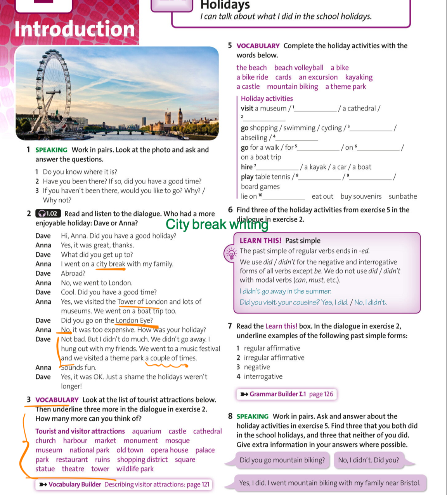

Class source page
Find Exercise 2 on the left. Read the conversation aloud once with the page, then use the separate recall task for homework.

On a phone, swipe inside the image area to read the page at a larger size.
Holidays · Exercise 2
Use the exact source page from class to review the Dave–Anna conversation.
Find Exercise 2 on the left. Read the conversation aloud once with the page, then use the separate recall task for homework.

On a phone, swipe inside the image area to read the page at a larger size.